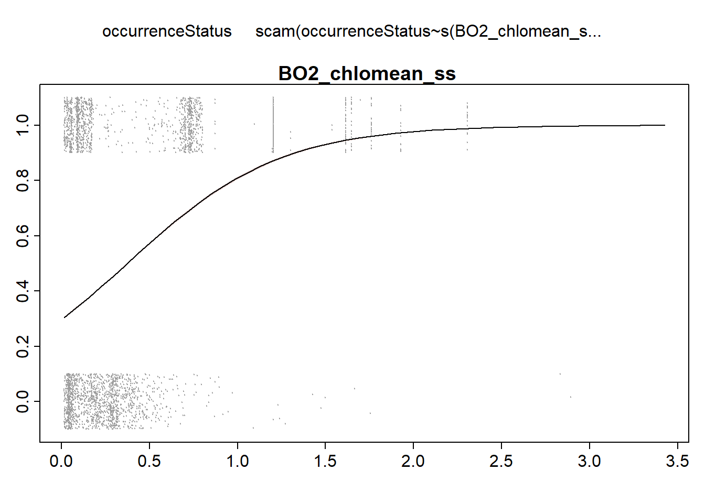
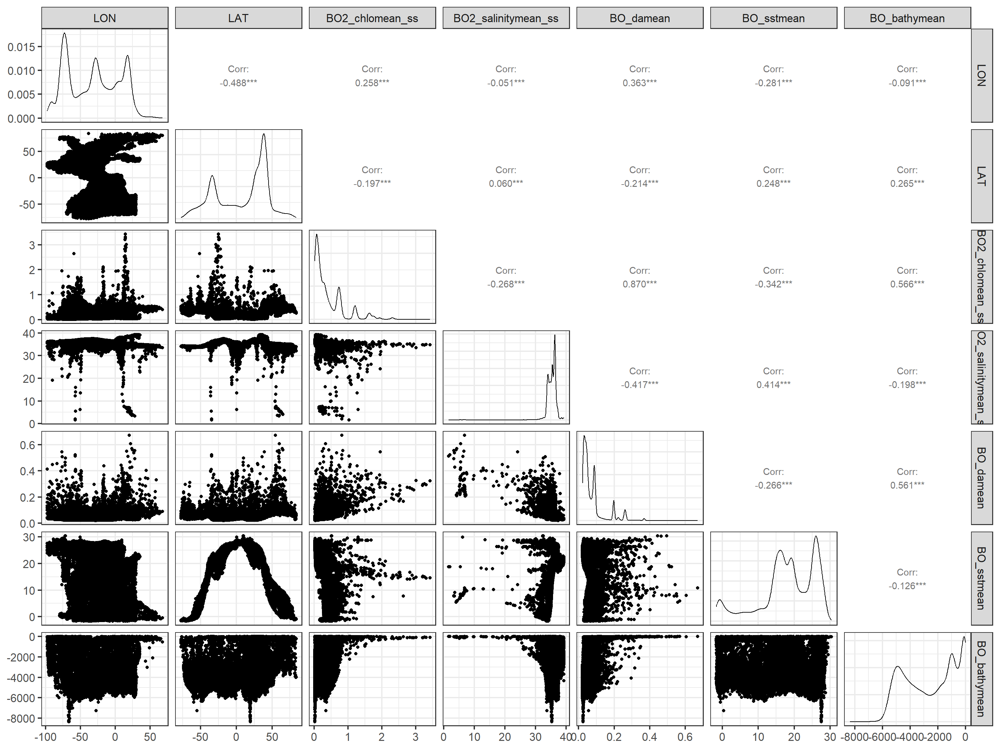
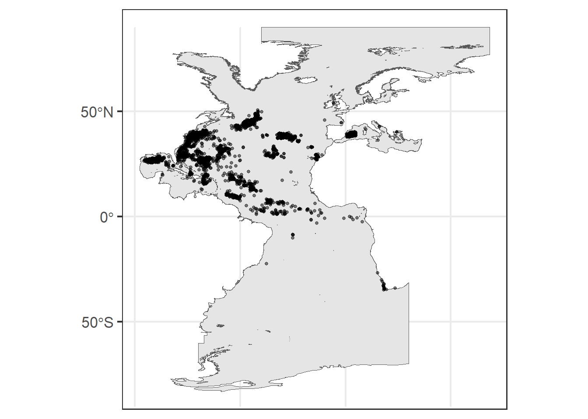
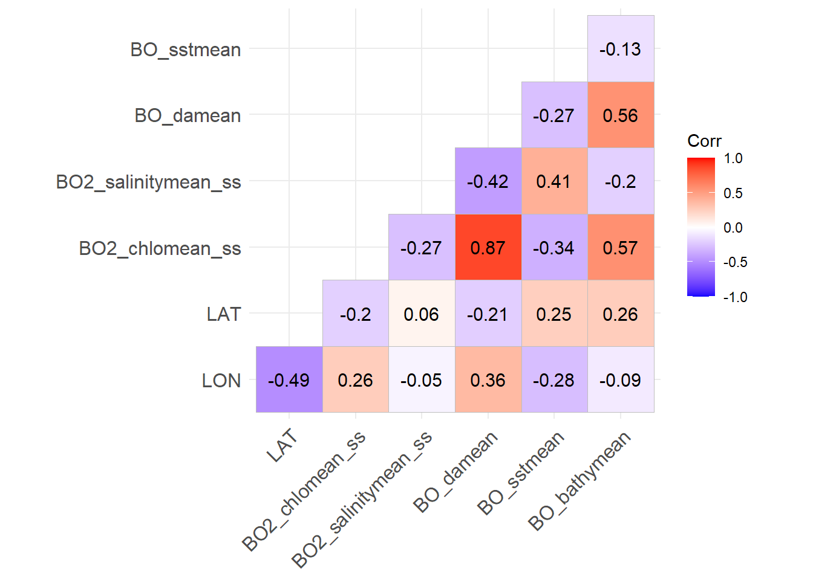
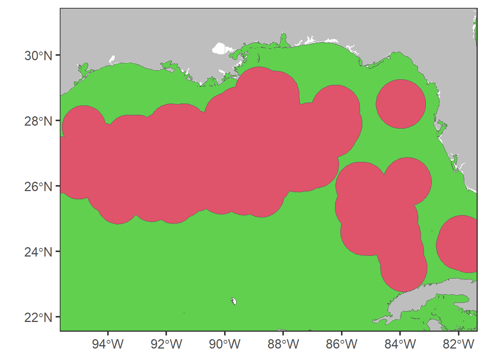

Chapter 2 Presence-absence data
In this chapter we first, download occurrence data from global open-access datasets such as Global Biodiversity Information Facility (GBIF, https://www.gbif.org/) and Ocean Biodiversity Information System (OBIS, https://obis.org/); second, clean downloaded data reformating, renaming fields and removing outliers data; and lastly, we generate a set of pseudoabsence points along the defined study area.
First we load a list of required libraries.
requiredPackages <- c(
#GENERAL USE LIBRARIES --------#
"here", # Library for reproducible workflow
"rstudioapi", # Library for reproducible workflow
"maptools", #plotting world map
"ggplot2", #for plotting
#Download presence data--------#
"robis", # Specific library to get the occurrence data
"rgbif",# Specific library to get the occurrence data
"CoordinateCleaner", #to remove outlier
"rgdal", # to work with Spatial data
"sf", # to work with spatial data (shapefiles)
"data.table", #for reading data,
"dplyr", #for reading data,
"tidyr", #for reading data
"marmap", #bathymetry getNOAA.bathy remotes::install_github("ericpante/marmap")
#Create pseudo-absence data--------#
"tidyverse",
"scales",
"ggridges",
"maps", # some basic country maps
"mapdata", # higher resolution maps
"mapproj",
"mapplots", # ICES rectangles
"gridExtra",
"lubridate",
"raster" # to work with Spatial data
)We run a function to install the required packages that are not in our system and load all the required packages.
install_load_function <- function(pkg){
new.pkg <- pkg[!(pkg %in% installed.packages()[, "Package"])]
if (length(new.pkg))
install.packages(new.pkg, dependencies = TRUE)
sapply(pkg, require, character.only = TRUE)
}
install_load_function(requiredPackages)## here rstudioapi maptools ggplot2
## TRUE TRUE TRUE TRUE
## robis rgbif CoordinateCleaner rgdal
## TRUE TRUE TRUE TRUE
## sf data.table dplyr tidyr
## TRUE TRUE TRUE TRUE
## marmap tidyverse scales ggridges
## TRUE TRUE TRUE TRUE
## maps mapdata mapproj mapplots
## TRUE TRUE TRUE TRUE
## gridExtra lubridate raster
## TRUE TRUE TRUEWe define some overall settings.
# General settings for ggplot (black-white background, larger base_size)
theme_set(theme_bw(base_size = 16))2.1 Download presence data
In this section we download presence data from global public datasets.
To do so, we first define a study area, in this case we select the Atlantic Ocean based on the The Food and Agriculture Organization (FAO) Major Fishing Areas for Statistical Purposes and we remove Black Sea subarea.
# url where FAO shapfile is stored
url<-"https://www.fao.org/fishery/geoserver/area/ows?service=WFS&version=1.0.0&request=GetFeature&typeName=area%3AFAO_AREAS&maxFeatures=50&outputFormat=SHAPE-ZIP"
# Download file
download.file(url,"data/spatial/FAO_AREAS.zip",mode="wb")
# Unzip downloaded file
unzip(here::here ("data", "spatial", "FAO_AREAS.zip"),exdir="data/spatial")
# Load FAO (spatial multipolygon)
FAO<- st_read(file.path("data", "spatial", "FAO_AREAS.shp"))## Reading layer `FAO_AREAS' from data source
## `D:\PROJECTS\github\gam-niche\data\spatial\FAO_AREAS.shp' using driver `ESRI Shapefile'
## Simple feature collection with 50 features and 15 fields
## Geometry type: MULTIPOLYGON
## Dimension: XY
## Bounding box: xmin: -180 ymin: -85.58276 xmax: 180 ymax: 89.99
## Geodetic CRS: WGS 84# Select Atlantic Ocean FAO Area
FAO_Atl <- FAO[FAO$OCEAN=="Atlantic",]
# Select Black Sea subarea
Black_Sea <- FAO_Atl[FAO_Atl$ID=="20",]
# Transform to sf objects
FAO_Atl.sf <- st_as_sf(FAO_Atl)
Black_Sea.sf <- st_as_sf(Black_Sea)
# Remove Black sea using st_difference (reverse of st_intersection)
FAO_Atl_no_black_sea <- st_difference(FAO_Atl.sf,Black_Sea.sf) %>% dplyr::select (F_AREA)
# Transform to spatial polygons dataframe
study_area<- sf:::as_Spatial(FAO_Atl_no_black_sea)
plot(study_area)
# Remove unused files
rm(FAO, FAO_Atl, FAO_Atl.sf, FAO_Atl_no_black_sea, Black_Sea, Black_Sea.sf)Download occurrence data from OBIS and GBIF using scientific name.
In this case we select Albacore tuna species (Thunnus alalunga).
# Get data from OBIS
#mydata.obis<-robis::occurrence(scientificname="Thunnus alalunga")
#save(mydata.obis, file=file.path("data","occurrences",file="mydata.obis.RData"))
load(here::here ("data", "occurrences", "mydata.obis.RData"))
# Get data from GBIF
#mydata.gbif<-occ_data(scientificName="Thunnus alalunga", hasCoordinate = TRUE, limit=100000)$data
#save(mydata.gbif,file=file.path("data","occurrences",file="mydata.gbif.RData"))
load(here::here ("data", "occurrences", "mydata.gbif.RData"))We now check the downloaded data and select the fields of interest.
# Check names for GBIF data
names(mydata.gbif)## [1] "key" "scientificName"
## [3] "decimalLatitude" "decimalLongitude"
## [5] "issues" "datasetKey"
## [7] "publishingOrgKey" "installationKey"
## [9] "publishingCountry" "protocol"
## [11] "lastCrawled" "lastParsed"
## [13] "crawlId" "hostingOrganizationKey"
## [15] "basisOfRecord" "occurrenceStatus"
## [17] "taxonKey" "kingdomKey"
## [19] "phylumKey" "orderKey"
## [21] "familyKey" "genusKey"
## [23] "speciesKey" "acceptedTaxonKey"
## [25] "acceptedScientificName" "kingdom"
## [27] "phylum" "order"
## [29] "family" "genus"
## [31] "species" "genericName"
## [33] "specificEpithet" "taxonRank"
## [35] "taxonomicStatus" "iucnRedListCategory"
## [37] "dateIdentified" "coordinateUncertaintyInMeters"
## [39] "year" "month"
## [41] "day" "eventDate"
## [43] "modified" "lastInterpreted"
## [45] "references" "license"
## [47] "isInCluster" "datasetName"
## [49] "recordedBy" "identifiedBy"
## [51] "geodeticDatum" "countryCode"
## [53] "country" "rightsHolder"
## [55] "identifier" "http://unknown.org/nick"
## [57] "informationWithheld" "verbatimEventDate"
## [59] "collectionCode" "gbifID"
## [61] "occurrenceID" "taxonID"
## [63] "catalogNumber" "institutionCode"
## [65] "eventTime" "http://unknown.org/captive"
## [67] "identificationID" "continent"
## [69] "stateProvince" "verbatimLocality"
## [71] "occurrenceRemarks" "lifeStage"
## [73] "datasetID" "eventID"
## [75] "footprintWKT" "originalNameUsage"
## [77] "county" "identificationVerificationStatus"
## [79] "nameAccordingTo" "networkKeys"
## [81] "individualCount" "elevation"
## [83] "waterBody" "institutionKey"
## [85] "otherCatalogNumbers" "preparations"
## [87] "recordNumber" "acceptedNameUsage"
## [89] "vernacularName" "institutionID"
## [91] "language" "type"
## [93] "identificationRemarks" "projectId"
## [95] "municipality" "collectionKey"
## [97] "higherGeography" "georeferenceProtocol"
## [99] "island" "endDayOfYear"
## [101] "locality" "fieldNumber"
## [103] "startDayOfYear" "collectionID"
## [105] "higherClassification" "materialSampleID"
## [107] "disposition" "programmeAcronym"
## [109] "organismQuantity" "organismQuantityType"
## [111] "samplingProtocol" "locationAccordingTo"
## [113] "coordinatePrecision" "georeferencedDate"
## [115] "nomenclaturalCode" "associatedReferences"
## [117] "taxonRemarks" "ownerInstitutionCode"
## [119] "bibliographicCitation" "habitat"
## [121] "locationRemarks" "depth"
## [123] "http://unknown.org/license" "taxonConceptID"
## [125] "http://unknown.org/rightsHolder" "depthAccuracy"
## [127] "dynamicProperties" "elevationAccuracy"
## [129] "rights" "georeferenceSources"
## [131] "georeferenceRemarks" "name"
## [133] "associatedSequences" "establishmentMeans"
## [135] "georeferenceVerificationStatus" "accessRights"
## [137] "georeferencedBy" "verbatimSRS"
## [139] "previousIdentifications" "locationID"
## [141] "acceptedNameUsageID" "http://unknown.org/language"
## [143] "http://unknown.org/modified" "samplingEffort"
## [145] "verbatimDepth" "behavior"
## [147] "eventRemarks" "footprintSRS"
## [149] "namePublishedInYear" "verbatimCoordinateSystem"
## [151] "parentNameUsage" "http://unknown.org/taxonRankID"
## [153] "http://unknown.org/species" "higherGeographyID"
## [155] "islandGroup" "organismID"
## [157] "distanceFromCentroidInMeters" "http://unknown.org/orders"
## [159] "typeStatus"# Select columns of interest
mydata.gbif <- mydata.gbif %>%
dplyr::select("acceptedScientificName",
"decimalLongitude",
"decimalLatitude",
"year",
"month",
"day",
"eventDate",
"depth")
# Check names in for OBIS data
names(mydata.obis)## [1] "infraphylum" "country"
## [3] "date_year" "scientificNameID"
## [5] "year" "scientificName"
## [7] "dropped" "gigaclassid"
## [9] "aphiaID" "decimalLatitude"
## [11] "subclassid" "gigaclass"
## [13] "infraphylumid" "phylumid"
## [15] "familyid" "catalogNumber"
## [17] "basisOfRecord" "terrestrial"
## [19] "id" "day"
## [21] "parvphylum" "order"
## [23] "dataset_id" "locality"
## [25] "decimalLongitude" "collectionCode"
## [27] "date_end" "speciesid"
## [29] "date_start" "month"
## [31] "genus" "eventDate"
## [33] "brackish" "absence"
## [35] "subfamily" "genusid"
## [37] "originalScientificName" "marine"
## [39] "subphylumid" "subfamilyid"
## [41] "institutionCode" "date_mid"
## [43] "class" "orderid"
## [45] "waterBody" "kingdom"
## [47] "classid" "phylum"
## [49] "species" "subphylum"
## [51] "subclass" "family"
## [53] "category" "kingdomid"
## [55] "parvphylumid" "node_id"
## [57] "flags" "sss"
## [59] "shoredistance" "sst"
## [61] "bathymetry" "maximumDepthInMeters"
## [63] "minimumDepthInMeters" "sex"
## [65] "depth" "coordinatePrecision"
## [67] "verbatimCoordinates" "occurrenceRemarks"
## [69] "individualCount" "occurrenceStatus"
## [71] "modified" "materialSampleID"
## [73] "occurrenceID" "scientificNameAuthorship"
## [75] "taxonRank" "datasetID"
## [77] "associatedReferences" "bibliographicCitation"
## [79] "coordinateUncertaintyInMeters" "vernacularName"
## [81] "footprintWKT" "specificEpithet"
## [83] "recordNumber" "georeferenceRemarks"
## [85] "stateProvince" "continent"
## [87] "recordedBy" "rightsHolder"
## [89] "language" "type"
## [91] "license" "ownerInstitutionCode"
## [93] "datasetName" "geodeticDatum"
## [95] "accessRights" "dynamicProperties"
## [97] "county" "samplingEffort"
## [99] "lifeStage" "footprintSRS"
## [101] "samplingProtocol" "parentEventID"
## [103] "eventID" "eventRemarks"
## [105] "identifiedBy" "georeferencedBy"
## [107] "minimumElevationInMeters" "maximumElevationInMeters"
## [109] "dateIdentified" "behavior"
## [111] "georeferenceProtocol" "verbatimDepth"
## [113] "organismQuantity" "organismQuantityType"
## [115] "startDayOfYear" "collectionID"
## [117] "typeStatus" "institutionID"
## [119] "acceptedNameUsage" "preparations"
## [121] "countryCode" "otherCatalogNumbers"
## [123] "references" "fieldNumber"
## [125] "endDayOfYear" "eventTime"
## [127] "locationID" "taxonRemarks"
## [129] "georeferencedDate" "verbatimEventDate"
## [131] "identificationRemarks" "nomenclaturalCode"
## [133] "taxonomicStatus" "higherClassification"
## [135] "higherGeography" "verbatimLatitude"
## [137] "verbatimLongitude" "establishmentMeans"
## [139] "verbatimLocality" "georeferenceVerificationStatus"
## [141] "island" "identificationQualifier"
## [143] "identificationID" "informationWithheld"
## [145] "islandGroup" "acceptedNameUsageID"
## [147] "locationRemarks" "verbatimSRS"
## [149] "previousIdentifications"# Select columns of interest
mydata.obis <- mydata.obis %>%
dplyr::select("scientificName",
"decimalLongitude",
"decimalLatitude",
"date_year",
"month",
"day",
"eventDate",
"depth",
"bathymetry",
"occurrenceStatus",
"sst")Reformat the data adding a new field and renaming some columns from mydata.gbif dataframe in order to have the same columns and be able to join both downloaded datasets.
mydata.gbif <- mydata.gbif %>%
dplyr::rename(scientificName= "acceptedScientificName") %>%
dplyr::rename(date_year = "year") %>%
dplyr::mutate(bathymetry= NA) %>%
dplyr::mutate(occurrenceStatus=1) %>%
dplyr::mutate(sst= NA)
# Join data from OBIS and GBIF
mydata.fus<-rbind(mydata.obis,mydata.gbif)
# Assign unique scientific name
mydata.fus <- mydata.fus %>%
dplyr::mutate(scientificName= paste(mydata.obis$scientificName[1]))
# Remove unused files
rm(mydata.gbif, mydata.obis)We now clean downloaded raw data.
# Give date format to eventDate and fill out month and date_year columns
mydata.fus$eventDate <- as.Date(mydata.fus$eventDate)
mydata.fus$date_year <- as.numeric(mydata.fus$date_year)
mydata.fus$month <- as.numeric(mydata.fus$month)
# Assign 1 value to occurrenceStatus
mydata.fus <- mydata.fus %>%
dplyr::mutate(occurrenceStatus = 1)We remove outliers based on distance method (total distance= 1000 km).
out.dist <- cc_outl(x=mydata.fus,
lon = "decimalLongitude", lat = "decimalLatitude",
species = "scientificName",
method="distance", tdi=1000, # distance method with tdi=1000km
thinning=T, thinning_res=0.5,
value="flagged")
# Remove outliers from the data
mydata.fus <- mydata.fus[out.dist, ]Remove duplicates.
# First create a vector containing longitude, latitude and event date information
date <- cbind(mydata.fus$decimalLongitude,mydata.fus$decimalLatitude,mydata.fus$eventDate)
# Remove the duplicated records
mydata.fus<-mydata.fus[!duplicated(date),]
# Remove unused files
rm(date)Mask retrieved occurrence data to our study area and add bathymetry value to each occurrence point.
# Assign coordinate format and projection to be able to use FAO Atlantic as a mask
dat <- data.frame(cbind(mydata.fus$decimalLongitude,mydata.fus$decimalLatitude))
ptos<-as.data.table(dat,keep.columnnames=TRUE)
coordinates(ptos) <- ~ X1 + X2
# Assign projection
proj4string(ptos) <-proj4string(study_area)
# Select only occurrences from FAO Atlantic
match2<-data.frame(subset(mydata.fus,!is.na(over(ptos, study_area)[,1])))
# Extract the FAO area of each point
match3<-data.frame(subset(over(ptos, study_area), !is.na(over(ptos, study_area)[,1])))
# Create data frame with area, name, long, lat and year
df0<-cbind(F_AREA=match3$F_AREA,match2)[,c("F_AREA","scientificName","decimalLongitude","decimalLatitude","date_year","occurrenceStatus")]
# Rename some columns
names(df0)[3:5]<-c("LON","LAT","YEAR")
# Add bathymetry from NOAA
#bathy <- marmap::getNOAA.bathy(lon1=-100,lon2=30,lat1=-41,lat2=55, resolution = 1, keep=TRUE, antimeridian=FALSE, path= here::here("data", "spatial"))
load(here::here ("data", "spatial", "bathy.RData"))
df0$bathymetry <- get.depth(bathy, df0[,c("LON","LAT")], locator=F)$depth
# Remove unused files
rm(mydata.fus, match2, match3, dat, ptos)We plot the occurrence data.
ggplot() +
geom_path(data = study_area,
aes(x = long, y = lat, group = group),
color = 'gray', linewidth = .2) +
geom_point(data=df0, aes(x=LON, y=LAT)) 
And, we save the data.
save(df0, file = "data/occurrences/occ.RData")
save(study_area, file = "data/spatial/study_area.RData")2.2 Create pseudo-absence data
After saving presence data for the species of interest we need to generate absence information in order to work with logistic regression SDM afterwards. In this case we create pseudo-absence data with a constant prevalence of 50% (McPherson, Jetz, and Rogers 2004); (Barbet-Massin et al. 2012).
For that, we generate a buffer around each presence data point, with a radius of 100km, where no points can be generated.
Before starting the pseudo-absence generation process, we delete observations in land (positive bathymetry) and select data between 2000 and 2014 (same temporal range as the environmental data that we will download later).
# Remove points in land
df0<-subset(df0,bathymetry<0)
# Select only years from 2000 to 2014
df0<- subset(df0, YEAR<=2014 & YEAR>=2000)Then we transform the presence data frame to “SpatialPointsDataFrame” class object and to “sf” class object so we can operate and plot easily with spatial data tools. We can see the characteristics of the object through its summary.
# Convert to spatial point data frame
df<-df0 ; coordinates(df)<- ~LON+LAT
crs(df)<-crs(study_area)
# Convert to sf
df.sf<-st_as_sf(df)
study_area.sf<-st_union(st_as_sf(study_area))
summary(df)## Object of class SpatialPointsDataFrame
## Coordinates:
## min max
## LON -95.65 24.45000
## LAT -34.71 54.15014
## Is projected: FALSE
## proj4string : [+proj=longlat +datum=WGS84 +no_defs]
## Number of points: 14903
## Data attributes:
## F_AREA scientificName YEAR occurrenceStatus
## Length:14903 Length:14903 Min. :2000 Min. :1
## Class :character Class :character 1st Qu.:2001 1st Qu.:1
## Mode :character Mode :character Median :2002 Median :1
## Mean :2003 Mean :1
## 3rd Qu.:2004 3rd Qu.:1
## Max. :2013 Max. :1
## bathymetry
## Min. :-8404.09
## 1st Qu.:-1916.92
## Median :-1030.77
## Mean :-1433.61
## 3rd Qu.: -351.32
## Max. : -1.13We can easily plot sf objects using ggplot, here we plot the area of study and the presence data points.
ggplot(study_area.sf) +
geom_sf() +
geom_sf(data=st_union(df.sf),
size=1,
alpha=0.5)
We save a base plot (p0) with the world map and our area of study in blue.
# Basic ggplot
global <- map_data("worldHires")
p0 <- ggplot() +
annotation_map(map=global, fill="grey")+
geom_sf(data=study_area.sf,fill=5)
print(p0)
In order to generate a buffer around each occurrence data point, we need to work with euclidean distances, so first, we need to transform the decimal latitude and longitude values to UTM.
# Function to find your UTM.
lonlat2UTM = function(lonlat) {
utm = (floor((lonlat[1] + 180) / 6) %% 60) + 1
if(lonlat[2] > 0) {
utm + 32600
} else{
utm + 32700
}
}
(EPSG_2_UTM <- lonlat2UTM(c(mean(df$LON), mean(df$LAT))))## [1] 32623# Transform study_area and data points to UTMs (in m)
aux <- st_transform(study_area.sf, EPSG_2_UTM)
df.sf.utm <- st_transform(df.sf, EPSG_2_UTM)Now, we can create buffers of 100 km around the points and join the resulting polygons. Then this buffer is intersected with the area of study defining the area where the pseudo-absences can be generated. To visualize the defined areas, we plot the buffers in red and the area that we will use to generate pseudo-absences in green.
# Create buffers of 100000m
buffer <- st_buffer(df.sf.utm, dist=100000)
buffer <- st_union(buffer)
# Intersect the are with the buffer
aux0 <- st_difference(aux, buffer)
# ggplot for all data
p0 +
geom_sf(data=aux0,fill=3) +
geom_sf(data=buffer,fill=2)
#zoom
p0 +
geom_sf(data=aux0,fill=3) +
geom_sf(data=buffer,fill=2)+
coord_sf(xlim=c(-95,-82), ylim=c(22,31))
We create a data frame for pseudo-absences with the same dimensions as the presences data frame.
# Generate the pseudo-absence data frame
pseudo <- matrix(data=NA, nrow=dim(df0)[1], ncol=dim(df0)[2])
pseudo <- data.frame(pseudo)
names(pseudo) <- names(df0)To generate the pseudo-absence data points, we sample randomly from the defined area and we extract their latitude and longitude to incorporate them in the created data frame. We set the occurrenceStatus equal to 0 as they are absences.
# Set the seed
set.seed(1)
# Sample from the defined area
rp.sf <- st_sample(aux0, size=dim(df.sf.utm)[1], type="random") # randomly sample points
# Transform to lat and lon and extract coordinates as data.frame
rp.sf <- st_transform(rp.sf, 4326)
rp <- as.data.frame(st_coordinates(rp.sf))
pseudo$LON <- rp$X
pseudo$LAT <- rp$Y
# Complete the rest of columns
pseudo$scientificName <- df0$scientificName
pseudo$occurrenceStatus <- 0We can plot the generated pseudo-absence data (in pink) in the map, together with the presence data points (in black).
p0 +
geom_sf(data=rp.sf, col=6, shape=4,size=0.5)+
geom_sf(data=df.sf.utm, col=1, alpha=0.8,size=0.5)+
ggtitle(unique(df$scientificName))
# Zoom
p0 +
geom_sf(data=rp.sf, col=6, shape=4,size=1)+
geom_sf(data=df.sf.utm, col=1, alpha=0.8,size=0.5)+
coord_sf(xlim=c(-95,-82), ylim=c(23,31))+
ggtitle(unique(df$scientificName))
Finally we join the presence and pseudo-absence data frames selecting the columns of interest and save the new data frame.
# Join the two data sets
PAdata <- rbind(df0, pseudo)[,c("scientificName","LON","LAT","YEAR","occurrenceStatus")]
# Save the final dataset of occurrence and pseudo-absence points
save(list=c("PAdata"),file=file.path("data","outputs_for_modelling",file="PAdata.RData"))